Graduate School & Fellowship Application Assistance
I volunteer with MIT’s Application Assistance Program to support students applying to graduate school. Having gone through the process myself—earning the NSF GRFP and admission offers from MIT, Stanford, Caltech, and UC Berkeley—I understand how challenging it can be to find your voice in an application. Beyond formal programs, I’ve also mentored friends and undergraduates one-on-one and am always happy to provide informal guidance to anyone who might benefit from it. If that's you, send me a message!
MIT: Graduate Student Council (GSC) and Materials Council (GMC)
At MIT, I served as a member of the Graduate Student Council from 2024–2025 and as DEI Co-Chair for the Graduate Materials Council (2023–2024), as well as a GradDiversity Ambassador through the Office of Graduate Education. In these roles, I’ve helped organize student committees, host community meetings, and develop initiatives that improve access to resources and address issues such as food security and student wellbeing. My work focuses on fostering a supportive and connected graduate community across MIT’s schools and departments.
 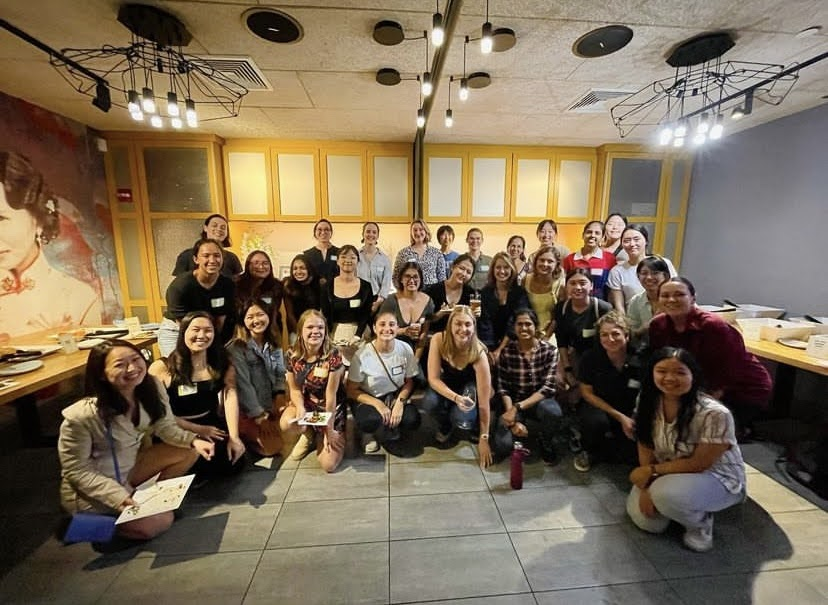
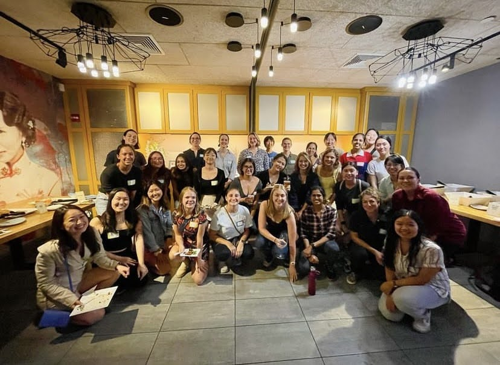
UCSD: IDEA Engineering Student Center
At UC San Diego’s Jacobs School of Engineering, I served as a Peer Facilitator and later as a Lead Peer Facilitator for the Summer Engineering Institute and Freshman Summer Prep programs, which support incoming engineering students in their transition to college. (I first joined SEI myself in 2018 as an ACES Scholar.) In these roles, I provided academic, personal, and logistical support to cohorts ranging from 120 to 400 students. I also mentored participants individually and in groups, led a team of facilitators, and helped adapt the program to a fully remote format during 2020. Across both years, I designed and led community-building activities that fostered collaboration, confidence, and a strong sense of belonging in engineering.
 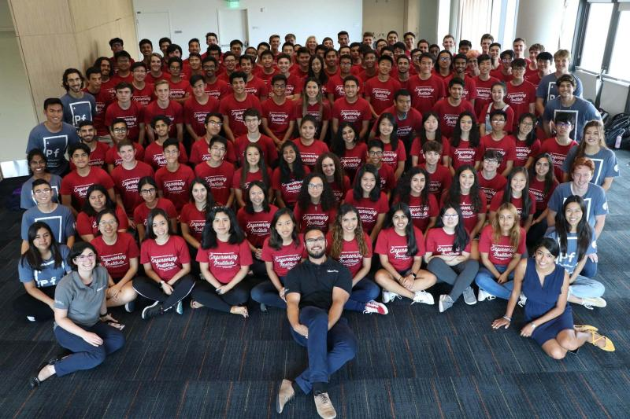
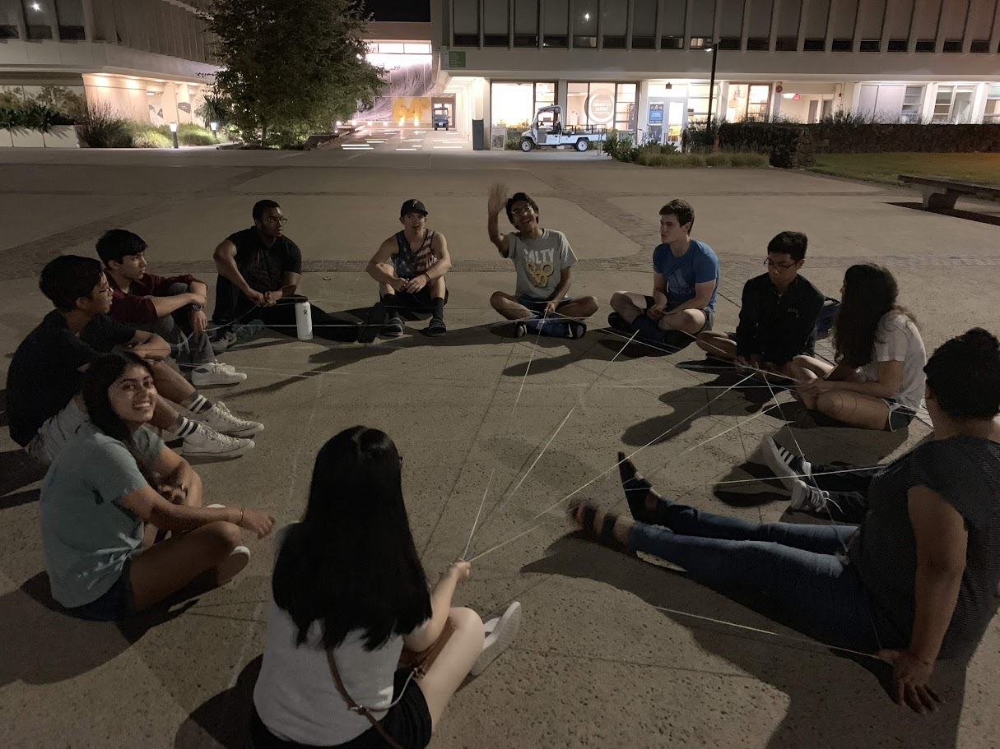
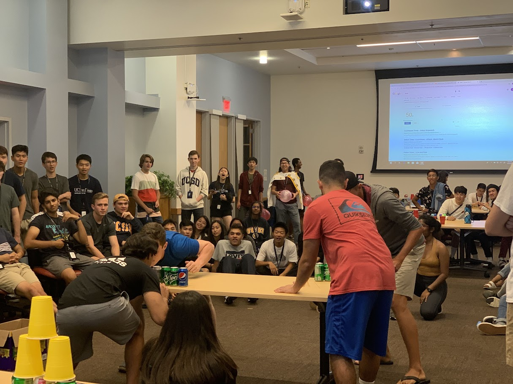
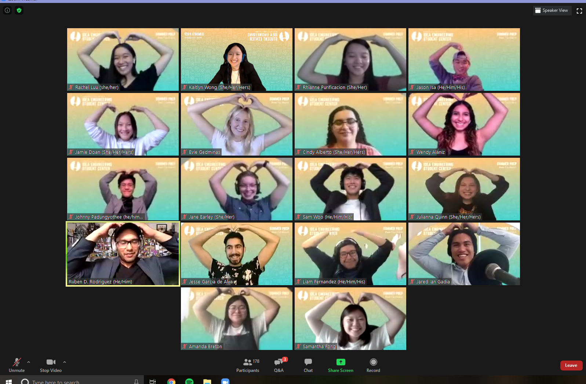
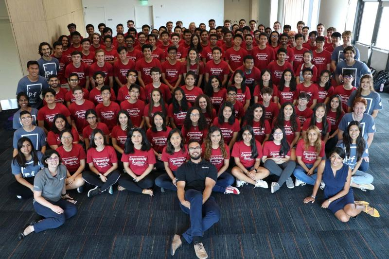
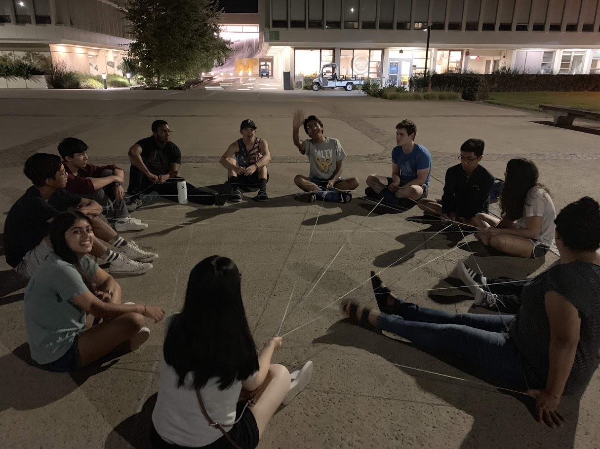
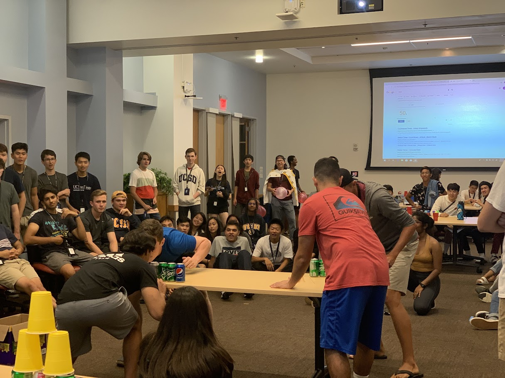
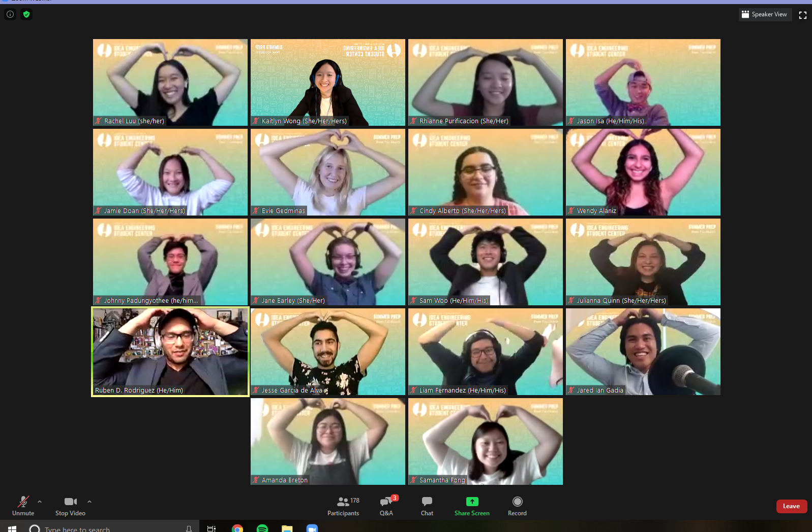
As a student intern and former ACES Scholar, I supported the Academic Community for Engineering Success (ACES) Program, which supported engineering students from underrepresented and economically disadvantaged backgrounds. I helped plan professional development events like resume reviews, industry talks, and mock interviews; organized social gatherings and field trips; hosted office-hour spaces for students; and handled the behind-the-scenes logistics that kept everything running smoothly. I also supported the Engineering Learning Communities (ELC) Program, coordinating over 15 tutoring sections each quarter that served 500+ students and earned a 96% recommendation rate. During the transition to remote learning, I helped lead the shift to online facilitation while maintaining strong engagement across the program.
UCSD: Chancellor's Scholars Program/Alliance
As a recipient of the UC San Diego Chancellor’s Scholarship, I joined the Chancellor’s Scholars Program—a leadership and mentorship initiative supporting high-achieving, first-generation, and low-income students. Through the Chancellor’s Scholars Alliance (the associated student organization), I served on the board in multiple roles over my four years at UCSD, helping plan retreats, mentorship networks, volunteering events, and professional development workshops that strengthened our scholar community. I also worked closely with faculty mentors through the Emeriti Association at UCSD.
- Freshman Ambassador 2018–2019
- Vice President External 2019–2020
- President 2020–2021
- Senior Advisor 2021–2022


 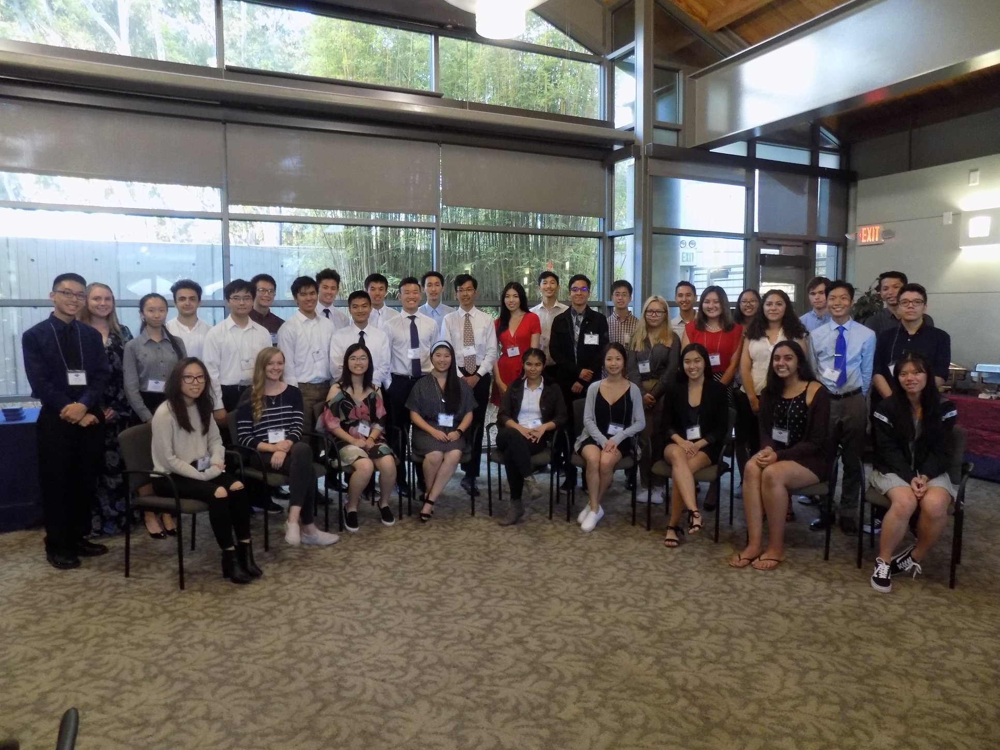
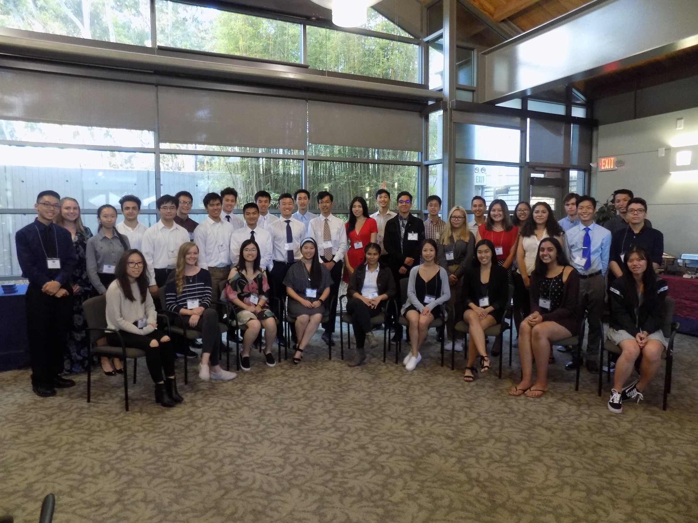